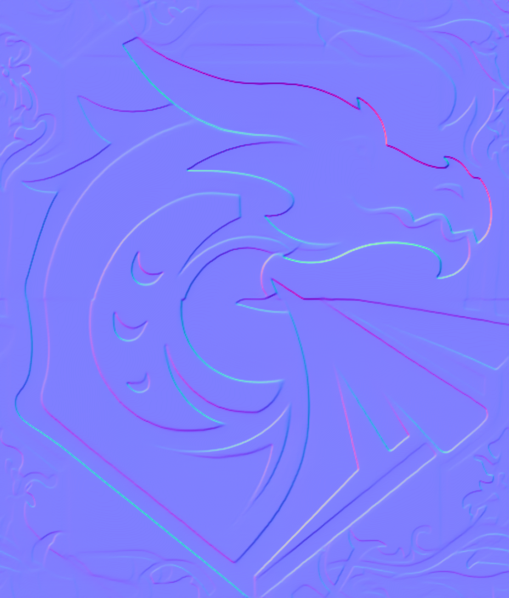

!uv pip install -q replicatePBR (Physically-Based Rendering) Material Creator

Dependencies
Set Replicate API Token
import sys
import os
from dotenv import load_dotenv
if 'google.colab' in sys.modules:
from google.colab import userdata # type:ignore
REPLICATE_API_TOKEN = userdata.get('REPLICATE_API_TOKEN')
else:
load_dotenv()
REPLICATE_API_TOKEN = os.getenv('REPLICATE_API_TOKEN')Create the Replicate client
import replicate
import io
from PIL import Image
client = replicate.Client(api_token=REPLICATE_API_TOKEN)Load the control image
CONTROL_IMAGE = "https://raw.githubusercontent.com/simonguest/CS-394/refs/heads/main/src/04/images/dragon.png"
control = open("../images/dragon.png", "rb")
control_bytes = io.BytesIO(control.read())
control_image = Image.open(control_bytes)
control_imageRun control image through FLUX Pro (controlled by Canny edge detection)
# @title Run initial image through FLUX Pro (controlled by Canny edge detection)
output = client.run(
"black-forest-labs/flux-canny-pro",
input={
"steps": 28,
"seed": 1234567, # Fix the seed so that the image is reproducible
"prompt": "a metal embossed dragon, cinematic lighting",
"guidance": 30,
"control_image": control,
"output_format": "png",
"safety_tolerance": 2,
"prompt_upsampling": False
}
)
output_bytes = io.BytesIO(output.read())
output_image = Image.open(output_bytes)
output_imageTile the image using FLUX schnell and ideogram inpainting
tiled = client.run(
"pipeline-examples/tile",
input={
"model": "black-forest-labs/flux-schnell",
"prompt": "a network of interconnected dragons",
"input_image": output_bytes,
"inpaint_model": "ideogram",
"seam_percentage": 30
}
)
tiled_bytes = io.BytesIO(tiled.read())
tiled_image = Image.open(tiled_bytes)
tiled_imageGenerate a depth map using Depth Anything
depth = client.run(
"chenxwh/depth-anything-v2:b239ea33cff32bb7abb5db39ffe9a09c14cbc2894331d1ef66fe096eed88ebd4",
input={
"image": tiled_bytes,
"model_size": "Large"
}
)
depth_bytes = io.BytesIO(depth["grey_depth"].read())
depth_image = Image.open(depth_bytes)
depth_imageConvert the depth map to a normal map for PBR
import numpy as np
def depth_to_normal(depth_image, strength=1.0):
depth_array = np.array(depth_image, dtype=np.float32) / 255.0
# Calculate gradients (sobel-like operators)
# Sobel kernels for x and y directions
sobel_x = np.array([[-1, 0, 1],
[-2, 0, 2],
[-1, 0, 1]]) * strength
sobel_y = np.array([[-1, -2, -1],
[ 0, 0, 0],
[ 1, 2, 1]]) * strength
# Pad the depth array to handle edges
padded_depth = np.pad(depth_array, 1, mode='edge')
# Initialize normal map components
height, width = depth_array.shape
dx = np.zeros((height, width))
dy = np.zeros((height, width))
# Calculate gradients using convolution
for i in range(height):
for j in range(width):
region = padded_depth[i:i+3, j:j+3]
dx[i, j] = np.sum(region * sobel_x)
dy[i, j] = np.sum(region * sobel_y)
# Create normal vectors
# In tangent space: x points right, y points down, z points out
# Normal = normalize(-dx, -dy, 1)
dz = np.ones_like(dx)
# Calculate magnitude for normalization
magnitude = np.sqrt(dx*dx + dy*dy + dz*dz)
# Normalize the vectors
nx = -dx / magnitude
ny = -dy / magnitude
nz = dz / magnitude
# Convert from [-1, 1] to [0, 255] for RGB channels
# R = X, G = Y, B = Z
normal_map = np.zeros((height, width, 3), dtype=np.uint8)
normal_map[:, :, 0] = ((nx + 1) * 0.5 * 255).astype(np.uint8) # Red (X)
normal_map[:, :, 1] = ((ny + 1) * 0.5 * 255).astype(np.uint8) # Green (Y)
normal_map[:, :, 2] = ((nz + 1) * 0.5 * 255).astype(np.uint8) # Blue (Z)
# Save the normal map
normal_img = Image.fromarray(normal_map)
return normal_img
normal_image = depth_to_normal(depth_image.convert('L'), strength=1.0)
normal_image
Save files
tiled_image.save("dragon_tiled.png")
normal_image.save("dragon_normal.png")